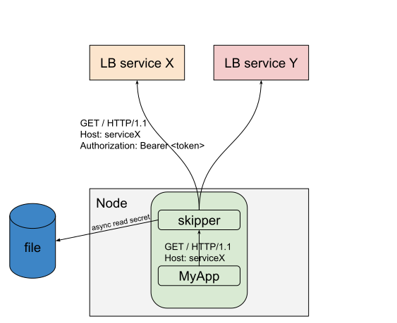

Egress Proxy¶
Disclaimer: Egress features are probably not feature complete. Please create GitHub Issues to show your ideas about this topic.
The picture below shows an authentication use case with Bearer token injection, to show the egress traffic flow: 
Skipper has some features, which are egress specific. Some features, for example dropRequestHeader or ratelimit, might also be used, but are not listed here:
- circuit breaker filters
- consecutiveBreaker
- rateBreaker
- disableBreaker
- bearerinjector filter, that injects tokens for an app
- The secrets module that does
- automated secrets rotation read from files used by
bearerinjector filter - dynamic secrets lookup used by
bearerinjector filter - encryption and decryption used by OpenID Connect filters
Secrets Module¶
Disclaimer: the specified features might be changed to make use cases work in the future.
Automated Secrets rotation¶
Secrets are read from files. Files can be rewritten by third party tools to integrate whatever provider you want. In Kubernetes you can write Secrets with an API and read them using a rotated, mounted files from skipper for example.
To specify files or directories to find secrets, you can use
-credentials-paths command line flag. Filenames are used to define
the name of the secret, which will be used as a lookup key.
The files need to be created before skipper is started, and as of today skipper doesn’t find new files automatically. This might change in the future.
To change the default update interval, which defaults to 10m, you
can use the -credentials-update-interval command line flag.
Example bearer injection¶
Create file /tmp/secrets/mytoken, that contains mytoken:
mkdir /tmp/secrets; echo mytoken >/tmp/secrets/mytoken`.
start fake service
nc -l 8080
start skipper proxy
skipper -inline-routes='Host("host1") -> bearerinjector("/tmp/secrets/mytoken") -> "http://127.0.0.1:8080/"' -credentials-paths=/tmp/secrets -credentials-update-interval=10s
..
[APP]INFO[0004] Updated secret file: /tmp/secrets/mytoken
..
Client calls skipper proxy
% curl -H"Host: host1" localhost:9090/foo
^C
fake service shows
GET /foo HTTP/1.1
Host: 127.0.0.1:8080
User-Agent: curl/7.49.0
Accept: */*
Authorization: Bearer mytoken
Accept-Encoding: gzip
Change the secret: echo changedtoken >/tmp/secrets/mytoken.
Wait until skipper logs: [APP]INFO[0010] update secret file: /tmp/secrets/mytoken
Restart fake service (CTRL-c to stop)
nc -l 8080
Client calls skipper proxy retry:
% curl -H"Host: host1" localhost:9090/foo
^C
fake service shows
GET /foo HTTP/1.1
Host: 127.0.0.1:8080
User-Agent: curl/7.49.0
Accept: */*
Authorization: Bearer changedtoken
Accept-Encoding: gzip
This example showed bearer injection with secrets rotation.
Reach multiple services¶
Often your service wants to reach multiple services, so you need to differentiate these routes, somehow.
For example your service needs to access a.example.com and
b.example.com.
One example is to use .localhost domain, so a.localhost and
b.localhost in your application and in skipper routes you would
have:
a: Host("a.localhost") -> bearerinjector("/tmp/secrets/mytoken") -> "https://a.example.com"
b: Host("b.localhost") -> bearerinjector("/tmp/secrets/mytoken") -> "https://b.example.com"
You can also use host aliases, in Linux /etc/hosts, or in Kubernetes
hostAliases:
Pod spec:
spec:
hostAliases:
- ip: 127.0.0.1
hostnames:
- a.local
- b.local
Future - TODOs¶
We want to experiment in how to best use skipper as egress proxy. One idea is to implement forward proxy via HTTP CONNECT and being able to use the routing to inject the right Authorization headers with the bearerinjector filter, for example.
If you have ideas please add your thoughts in one of the issues, that match your idea or create a new one.